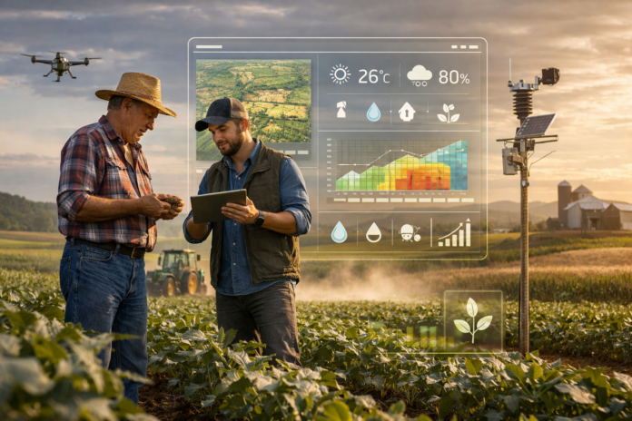

A tecnologia no campo tem desempenhado um papel cada vez mais importante na modernização da agricultura. Com o avanço das ferramentas digitais e dos equipamentos inteligentes, os produtores rurais conseguem melhorar a produtividade, reduzir custos e utilizar os recursos naturais de maneira mais eficiente.
Entre as principais tecnologias utilizadas estão os drones, que permitem monitorar plantações, identificar pragas e acompanhar o desenvolvimento das lavouras. Os tratores e máquinas agrícolas modernas, que utilizam sistemas de GPS para realizar atividades com maior precisão, e os sensores inteligentes, que monitoram a umidade do solo, a temperatura e as condições das plantações.
Outra inovação importante é a agricultura de precisão, que utiliza dados e tecnologias para identificar as necessidades específicas de cada área da plantação, evitando desperdícios de água, fertilizantes e outros recursos. Além disso, a inteligência artificial e os aplicativos agrícolas ajudam os produtores a analisar informações, prever problemas e tomar decisões mais assertivas.
Essas tecnologias tornam o trabalho no campo mais moderno, produtivo e sustentável. Além de facilitar a rotina dos agricultores, elas contribuem para aumentar a qualidade dos alimentos e garantir uma produção mais eficiente, preparada para atender às necessidades do futuro.
